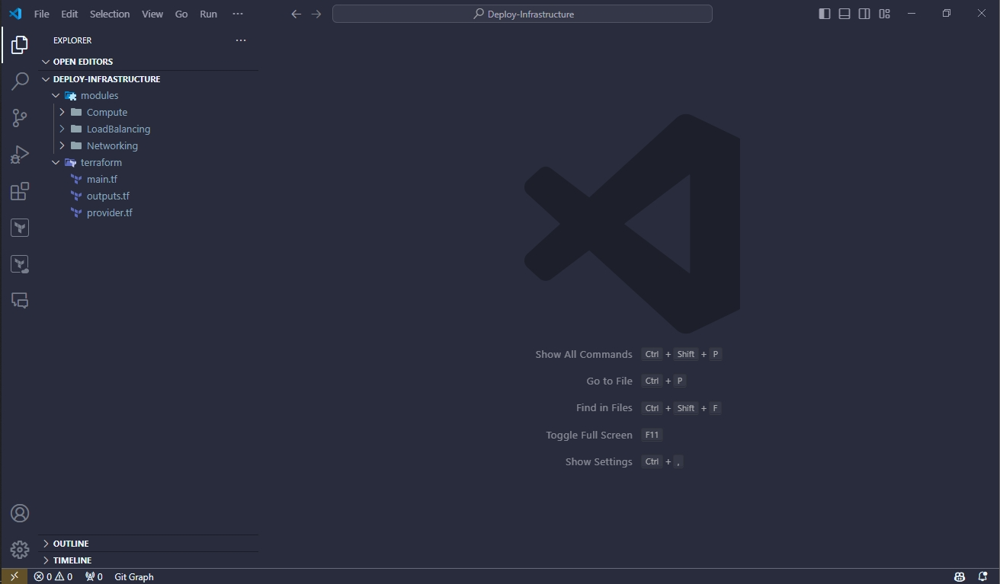
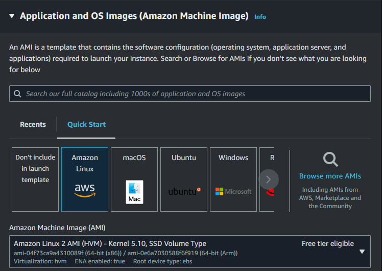
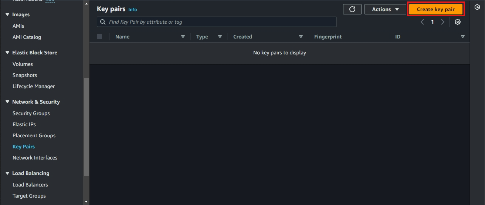

Terraform

Overview
With the terraform folder, we can call to some modules such as Networking, Compute and LoadBalancing. We don’t need to navigate to each folder and run terraform plan, terraform apply to create each resource.
Set up files
In the terraform folder, create three files and name it respectively as main.tf, outputs.tf and provider.tf.

Set up Provider
In Terraform, a provider is a plugin that acts as an interface between Terraform and an external service or platform. Providers allow Terraform to manage resources, interact with APIs, and perform operations on various cloud platforms, infrastructure services, and third-party systems.
Some popular Terraform providers:
- azurerm: Azure
- aws: Amazon Web Services
- google: Google Cloud Platform
Here, we deploy on AWS so we need to configure in the provider.tf file. We will create resource in region Singapore.
terraform {
required_providers {
aws = {
source = "hashicorp/aws"
version = "5.43.0"
}
}
}
provider "aws" {
region = "ap-southeast-1"
}
Set up Modules
Like I said before, you don’t need to go to each module and run terraform plan, terraform apply to create each resource. You can define modules in the main.tf file.
# Define our modules
module "Networking" {
source = "../modules/Networking"
cidr_block = "10.10.0.0/16"
}
module "Compute" {
source = "../modules/Compute"
instance_type = "t2.micro"
image_id = "ami-04f73ca9a4310089f"
keypair_name = "workshop-keypair-2"
web_server_sg_id = module.Networking.public_sg_id
public_subnet_1_id = module.Networking.public_subnet_1_id
public_subnet_2_id = module.Networking.public_subnet_2_id
alb_tg_arn = module.LoadBalancing.alb_tg_arn
}
module "LoadBalancing" {
source = "../modules/LoadBalancing"
one_tier_vpc_id = module.Networking.vpc_id
public_subnet_1_id = module.Networking.public_subnet_1_id
public_subnet_2_id = module.Networking.public_subnet_2_id
port = 80
protocol = "HTTP"
alb_security_group_id = module.Networking.alb_sg_id
}
Module Networking
In the Networking module, we just need to input the CIDR of the VPC, which is 10.10.0.0/16.
Module Compute
Here, we use the image ID of Amazon Linux 2 AMI and the instance type is t2.micro. You can get these information from AMI.

About keypair_name, access AWS Management Console and search for EC2 (Remember change your region to Singapore) then click on Key Pairs.
- Click on Create key pair

Configure like below.

After creating key pair successfully, you will see a notification.

About web_server_sg_id, public_subnet_1_id, public_subnet_2_id and lb_target_group_name, we will take the input from the module Networking.
Module LoadBalancing
We just define protocol HTTTP on port 80. About one_tier_vpc_id, public_subnet_1_id, public_subnet_2_id and alb_security_group_id, we will also take input from the module Networking.
Conclusion
By using this advantage, you can automatically create resources using Terraform without manually creating them on the AWS Management Console.
Terraform will determine the order in which resources need to be created. Initially, the resources within the Networking section will be created first, followed by the resources in the Compute section, and finally, the Load Balancing resources will be set up.
Then, we can test by using the DNS of ALB to check out our web server. We need to output the DNS of ALB in the outputs.tf file.
output "alb_dns" {
value = module.LoadBalancing.alb_dns
}